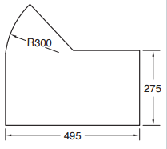
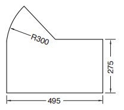

Kandungan ini mempunyai hak cipta kepada KPM (Buku Teks) dan Pencipta grafik,
Pengaturcaraan dan Nota dikecualikan.
(C) 2024 Reka Cipta
Bab 1: PENGENALAN KEPADA REKA CIPTA
Definisi Inventif, Inovasi dan Kreativiti dalam Reka Cipta [4]
Inventif
Berupaya (cenderung, suka dan sebagainya) mereka cipta sesuatu (benda dan sebagainya) yang baharu atau berdaya cipta. (Kamus Dewan Edisi Keempat)
Inovasi
Sesuatu yang baru diperkenalkan seperti kaedah, sistem, adat, dan lain-lain yang baharu. (Kamus Dewan Edisi Keempat)
Kreativiti
Kemampuan (kebolehan) mencipta, berdaya kreatif atau kekreatifan. (Kamus Dewan Edisi Keempat)
Sejarah Perkembangan Reka Cipta [5]
Zaman Prarevolusi Industri (Sebelum Abad ke-18)
Zaman Revolusi Industri (Abad ke-18 dan Abad ke-19)
Zaman Revolusi Industri Kedua (Abad ke-19 dan Abad ke-20)
Perkembangan Reka Cipta dalam Pelbagai Bidang
- Bidang Pengangkutan
- Bidang Pendidikan
- Bidang Teknologi Tenaga
- Bidang Pertanian
- Bidang Komunikasi
- Bidang Pembinaan
Pereka Cipta Dalam dan Luar Negara
Zulkifli Haji Haron
- Kereta Berkomputer
- Rumah Lot 2020
- Hoverkraf
- Mesin Industri Kecil dan Sederhana
- Sistem Oceantronic
- Kerusi Roda Automatik
- Kamera Penyalahgunaan Lorong Kecemasan
Robest Yong
- POLYCLONE Instant rubber stamp machine
- MOBIHEAT Portable water heater
- KAMIKAZE Mosquito glue
- GET-me Luggage detector
- STACT-on Magnetic brush
- CARVER-up Car mat
- ABL Automatic brake lock
- FLUSH n WASH Water cistern
- GREEN WHIZZARD Probiotic plant nutrients
- TIME-LOCK Remote control
- POPaWARE Disposable saucers
- LIDaBAG Plastic bag covers
- TGFree Laptop charger
- Egg incubator
Dieter Rams
- SK-4 Record Player (Pemain piring hitam)
- D 45 dan D46 Film Projector (Projektor filem)
- 606 Universal Shelving (Rak)
- Braun Dieter Rams Lighter (Pemetik api)
- Calculator Braun ET66 (Kalkulator)
James Dyson
- Dual Cyclone (Vakum tanpa habuk)
- DC07 (Vakum tanpa beg)
- Dyson Airblade (Pengering tangan)
- Dyson Air Multiplier (Kipas angin)
- Dyson Supersonic (Pengering Rambut)
Steve Jobs (1955-2011)
- Apple I (1976)
- Apple II (1976)
- iMac (1998)
- iPod (2001)
- iPhone (2007)
- iPad (2010)
Ciri-ciri Seorang Pereka Cipta
- Minat
- Empati
- Kreatif
- Inovatif
- Empiritif
- Perseptif
- Tidak Putus Asa
- Menjaga Alam Sekitar
Bab 2: ASAS REKA BENTUK DALAM REKA CIPTA
Prinsip Reka Bentuk
- Kesatuan
- Imbangan
- Penekanan
- Pergerakan
- Corak Kontra
- Rentak
- Corak
Elemen Reka Bentuk
- Garisan
- Rupa (Rupa Geometri & Rupa Organik)
- Bentuk
- Jalinan
- Ruang (Ruang Positif & Ruang Negatif)
- Warna
- Nilai
Peralatan dan Bahan
Tips: Peralatan tidak akan habis guna (hanya rosak); Bahan akan habis
Lukisan Perspektif
Tips: Hanya perlu tahu Lukisan Perspektif 1 titik, Lukisan Perspektif 2 titik, Lukisan Perspektif 3 titik sudah cukup (tak perlu lukis)
Bab 3: FAKTOR PEMILIHAN REKA BENTUK DALAM REKA CIPTA
Faktor Pemilihan Reka Bentuk
- Fungsi
- Rupa bentuk
- Bahan
- Teknik pembuatan
- Ergonomik
- Kos
- Nilai estetik
- Mesra pengguna
- Keselamatan
- Nilai komersial
- Kemasan
- Kelestarian
Bab 4: PENGENALPASTIAN MASALAH
Kaedah Kajian
- Soal selidik
- Pemerhatian
- Pengalaman sendiri atau orang lain
- Rujukan media cetak atau elektronik
- Temu bual
Bab 5: PENYELIDIKAN DAN KAJIAN PRODUK
Langkah-langkah Kerja Kajian Produk
- Mengenal pasti bahan rujukan atau produk
sedia ada sebagai bahan kajian produk dengan
menggunakan kaedah kajian yang sesuai
- Menganalisis kekuatan dan kelemahan fungsi dan
rupa bentuk/kaedah/prinsip/teori untuk setiap
bahan rujukan atau produk sedia ada yang dipilih
- Mempersembahkan hasil analisis dalam
bentuk jadual.
Penambahbaikan
Tips: Perlu tahu cara membuat penambahbaikan
Bab 6: PENJANAAN IDEA
Pemikiran
Pemikiran Logikal
Mengenal pasti sama ada idea yang dijana adalah betul dari segi logik dan kenyataan sebenar
Pemikiran Kreatif
Satu keupayaan atau kebolehan individu untuk mencipta sesuatu yang baharu
Pemikiran Lateral
Pemikiran lateral bersifat generatif dan membina.
Ia bertujuan untuk menerbitkan suatu
perubahan baharu dan berlainan terhadap sesuatu masalah
Pemikiran Kritikal
Mengenal pasti kesilapan, kelemahan, kekurangan dan kesalahan pada idea yang dijana
Pemikiran Intuitif
Berdasarkan kepada gerak hati atau naluri
Bab 7: MODEL OLOKAN (Mock-Up)
Ciri-ciri Model Olokan
- Model statik
- Tidak berfungsi
- Reka bentuk sebenar tiga dimensi (3D)
- Dibuat secara tidak berskala atau tidak mengikut saiz sebenar
Bab 8: LUKISAN KERJA
Sistem dimensi
Sistem Ekaarah
Tips: Semua dimensi dibaca dari bawah.
Sistem Terjajar
Tips: Sistem ini adalah menggunakan garisan dimensi yang selari dengan paksi yang didimensikan.
-- THE END --
The button may not works well. If you are not enter from Menu.